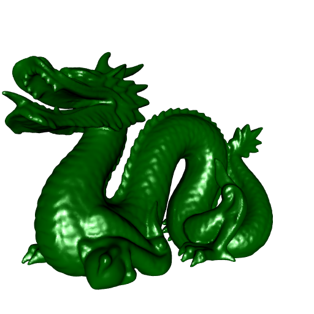
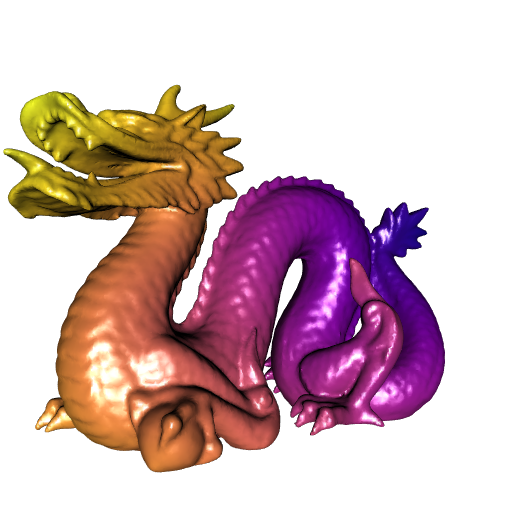

'CGAL' meets 'R6': the 'cgalMeshes' package
My new package cgalMeshes (not on CRAN yet) deals with 3D meshes. All algorithms implemented in this package are performed by the C++ library CGAL.
I already wrapped some CGAL stuff in some other packages. But these packages have been archived by CRAN because there were some warnings from the CGAL library, and I can’t fix them. So I didn’t implement the algorithms which throw some CRAN-unacceptable warnings in cgalMeshes, and hopefully this package will remain on CRAN.
Moreover this package is different: the meshes are represented by a R6 class, called cgalMesh. This is more convenient for the user, and once a mesh is instantiated, it stays in memory, whereas the mesh was reprocessed at each operation with the other packages.
Let’s have a quick look at cgalMeshes. Recall that the R6 class representing a mesh is called cgalMesh. So to create a R6 object from this class, one has to use the new method. This method allows to instantiate a mesh from a file, a rgl mesh, or from a matrix of vertices and a list of faces.
I have the Stanford dragon in a mesh file. Let’s create a new cgalMesh object from this file:
library(cgalMeshes)
dragon <- cgalMesh$new("StanfordDragon.off")
dragon
## Mesh with 100239 vertices and 200379 faces.Let’s plot it. We first do a rgl mesh from dragon with the getMesh method:
rglDragon <- dragon$getMesh()And now we plot the Stanford dragon:
library(rgl)
open3d(windowRect = 50 + c(0, 0, 512, 512))
view3d(-30, 0, zoom = 0.7)
shade3d(rglDragon, color = "darkgreen")
We can check whether the mesh is triangle and closed:
dragon$isTriangle()
## [1] TRUE
dragon$isClosed()
## [1] FALSEI don’t know why this mesh is not closed. If it were closed, we could get its volume by running dragon$volume:
dragon$volume()
## Error in .CppObject$volume(...): The mesh is not closed.Let’s do something more funny now. We will compute the geodesic distances between a source vertex on the mesh and all other vertices, and we will plot the dragon after assigning to each vertex a color corresponding to its geodesic distance from the source vertex. The geodesic distance between two vertices is the length of the shortest path between these two vertices which lies on the surface of the mesh.
We will take the rightmost vertex for the source vertex:
vertices <- dragon$vertices()
index <- which.max(vertices[, 1L])And we call the geoDists method to get the estimated geodesic distances:
geoDists <- dragon$geoDists(index)Now we define a coloring function, which associates a color of the viridisLite::plasma palette to each number in \((0, 1)\):
fcolor <- colorRamp(viridisLite::plasma(200L))Then we associate a color to each vertex:
colors <- fcolor(geoDists / max(geoDists))The colors object is a matrix, one row for each vertex, and the columns provide the RGB coding of the color. We use the rgb function to get hexadecimal colors:
colors <- rgb(
colors[, 1L], colors[, 2L], colors[, 3L], maxColorValue = 255
)Now we can add these colors to the rgl mesh:
rglDragon[["material"]] <- list("color" = colors)And here is the result:
open3d(windowRect = 50 + c(0, 0, 512, 512))
view3d(-30, 0, zoom = 0.7)
shade3d(rglDragon)
More images on the Github repo.